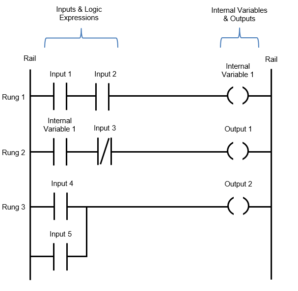

¿Qué es un PLC?
Un PLC, o controlador lógico programable, es un dispositivo electrónico utilizado para automatizar procesos industriales. Su función principal es recibir señales de entrada, procesarlas mediante un programa y generar señales de salida para controlar máquinas o sistemas automáticos.
Por ejemplo, un PLC puede detectar que un botón fue presionado, revisar si se cumplen ciertas condiciones y después activar una lámpara, un motor, una alarma o una válvula.
¿Qué es la programación ladder?
La programación ladder es un lenguaje gráfico muy utilizado en los PLC. Se llama así porque su estructura se parece a una escalera, con dos líneas laterales y varias líneas horizontales que representan la lógica del programa.
Es uno de los lenguajes más conocidos en automatización porque resulta visual, ordenado y guarda relación con los diagramas eléctricos tradicionales.
Entradas
Son las señales que llegan al PLC desde sensores, botones, finales de carrera o interruptores.
Lógica
La lógica del programa decide qué debe hacer el PLC según las condiciones que reciba desde las entradas.
Salidas
Son los dispositivos que el PLC controla, como motores, lámparas, válvulas, alarmas o relevadores.
Elementos básicos en Ladder
Contacto normalmente abierto
Permite el paso lógico cuando la entrada asociada está activada.
Contacto normalmente cerrado
Permite el paso lógico mientras la entrada no esté activada.
Bobina
Representa una salida que se activa cuando se cumple la condición de la línea.
Temporizador
Sirve para generar acciones con retardo o durante un tiempo determinado.
Contador
Ayuda a registrar cuántas veces ocurre un evento dentro del proceso.
Marcas internas
Son bits de memoria usados para guardar estados o condiciones dentro del programa.

Ejemplo sencillo de lógica ladder
Un ejemplo básico consiste en usar un pulsador como entrada y una lámpara como salida. Cuando el pulsador se activa, el contacto permite el paso lógico y la bobina energiza la lámpara.
Este tipo de ejemplo ayuda a entender cómo un PLC interpreta señales de entrada y genera una acción de salida dentro de un sistema de control.
¿Cómo trabaja un PLC?
En términos generales, el PLC sigue un ciclo repetitivo. Primero revisa las entradas, después ejecuta la lógica del programa y finalmente actualiza las salidas.
Ejemplo básico de arranque y paro
Uno de los ejercicios más comunes al aprender ladder es el circuito de arranque y paro de un motor. En este caso se utiliza un botón de arranque, un botón de paro y una salida que representa el motor.
Cuando se presiona el botón de arranque, el motor se activa. Cuando se presiona el botón de paro, el motor se desactiva. Este ejemplo ayuda a entender cómo trabajan las entradas, las salidas y la lógica de control.
Señales de entrada y salida
En un PLC, las entradas representan señales que llegan desde botones, sensores o interruptores. Las salidas corresponden a los dispositivos que el PLC controla, como lámparas, motores, alarmas o válvulas.
En esta parte de la página las cajas se superponen para representar visualmente la relación entre entradas y salidas dentro de un sistema de control.
Aplicaciones comunes del PLC
Los PLC se utilizan en muchos procesos industriales porque permiten automatizar tareas de forma confiable y ordenada.
Arranque de motores
Se usan para controlar el encendido, apagado, protecciones y secuencias de trabajo.
Bandas transportadoras
Permiten coordinar sensores, tiempos y movimientos en líneas de producción.
Sistemas de llenado
Ayudan a controlar válvulas, niveles, tiempos y secuencias automáticas.
Puertas automáticas
Detectan presencia, controlan tiempos y activan motores según la lógica programada.
Semáforos
Se programan tiempos de cambio y secuencias de luces por medio de temporizadores.
Alarmas industriales
Se activan cuando una condición de riesgo o fallo es detectada por el sistema.
Ventajas de usar Ladder
- Es visual y relativamente fácil de interpretar.
- Se relaciona con diagramas eléctricos tradicionales.
- Es muy utilizado en automatización industrial.
- Permite programar procesos de forma clara y ordenada.
- Facilita el mantenimiento y la detección de fallas.
Dato importante
Este detalle es importante porque ayuda a comprender el orden en el que el PLC evalúa las condiciones dentro del programa.
Conclusión
La programación ladder es una herramienta muy importante en la automatización industrial. Gracias a su estructura visual, es una de las formas más comunes de programar PLC en sistemas donde intervienen sensores, actuadores, temporizadores y motores.